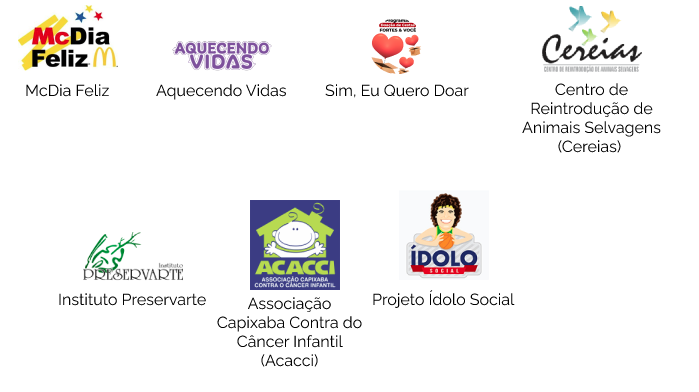
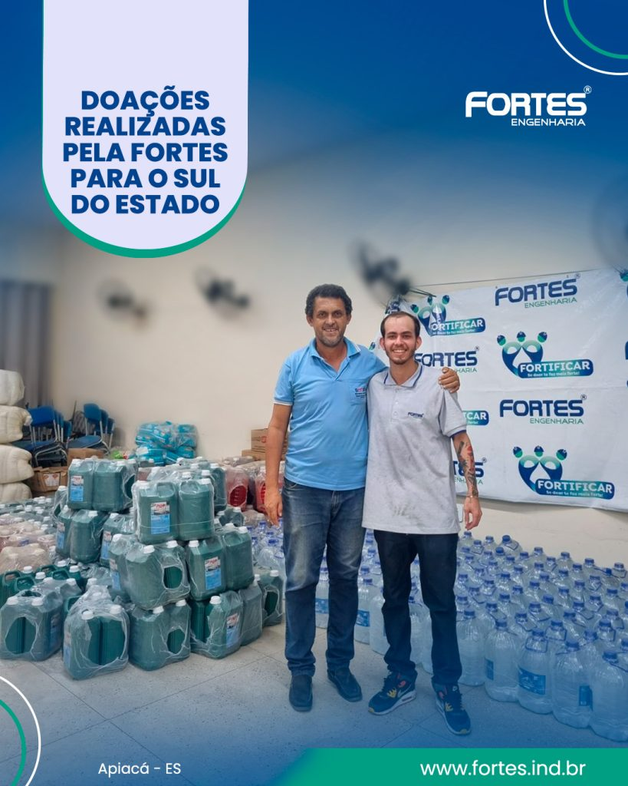
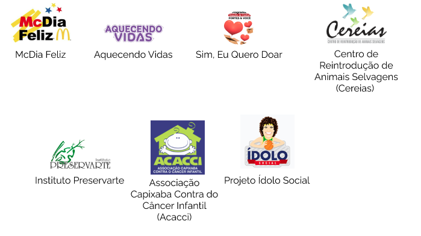

PROJETOS APOIADOS
Por meio dos projetos sociais que apoia e contribui, a FORTES melhora a qualidade de vida das pessoas envolvidas, buscando reduzir as desigualdades sociais e ampliar o acesso aos direitos e serviços básicos. São eles:

Por meio dos projetos sociais que apoia e contribui, a FORTES melhora a qualidade de vida das pessoas envolvidas, buscando reduzir as desigualdades sociais e ampliar o acesso aos direitos e serviços básicos. São eles:
